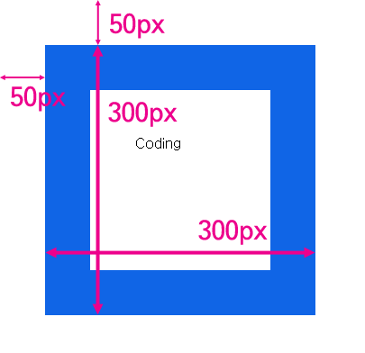

화면에 표시된 모습은 아래와 같다.
즉 엘리먼트의 테두리와 body 태그 사이의 거리가 50px이다. 그리고 테두리를 포함한 엘리먼트의 크기는 300px이다. 이 값을 알아내고 싶을 때 사용하는 API가 getBoundingClientRect이다. 이를 콘솔에서 실행한 결과는 아래와 같다.
bottom: 350즉 엘리먼트의 크기와 위치를 알고 싶을 때는 getBoundingClientRect를 사용하면 된다는 것을 알 수 있다.
getBoundingClientRect의 width, height 값을 IE는 제공하지 않는다.